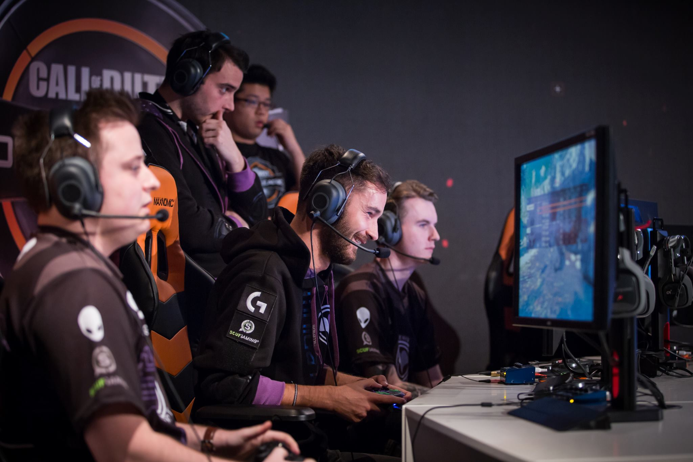

Qu'est-ce que l’esport ?

Contraction du terme anglais “electronic sport”, littéralement “sport électronique”, « Esport » désigne la pratique des jeux vidéo compétitifs, c’est-à-dire les jeux où le joueur affronte, seul ou en équipe, d’autres joueurs. Rassemblant des millions de fans, le phénomène explose ces dernières années, avec l’organisation fréquente de tournois amateurs et professionnels, en ligne via Internet ou lors d’événements de plus en plus importants et spectaculaires.
L’histoire de l’Esport
L’Esport n’est pas un phénomène nouveau. Déjà, dans les années 70, on pouvait assister aux premières compétitions de jeux vidéo. Les LAN Party, ces événements où les joueurs amènent leur propre ordinateur pour s’affronter nuit et jour, se font de plus en plus fréquents à la fin des années 90. Enfin, l’arrivée d’une connexion internet plus performante dans les foyers donne à l’Esport une dimension globale, connectant les joueurs du monde entier. En France, des événements, comme la Gamers Assembly en 2000, rassemblent déjà des centaines de joueurs, néophytes ou aguerris. Pour son édition 2016, elle a réuni plus de 1800 joueurs au cours de 22 tournois. De son côté, l’ESWC, l’Electronic Sport World Cup, a organisé sa première compétition en 2003 au Futuroscope de Poitiers. Aujourd’hui, il est l’instigateur de nombreux tournois en France et à l’étranger sous le nom d’Esports World Convention.
Qui pratique l’Esport?
L’Esport est, par essence, accessible à tous et sur tous les supports, chez soi devant sa console, son ordinateur, lors d’événements esportifs, mais aussi sur smartphone ou tablette. Les jeux vidéo compétitifs sont nombreux et variés, dans leur style et dans la difficulté de prise en main. Chacun peut donc y trouver son jeu de prédilection et le pratiquer en amateur. Mais l’essor de l’Esport et la multiplication de tournois aux récompenses de plus en plus importantes ont amené à la création d’équipes semi-professionnelles et professionnelles. Imitant les structures sportives, elles regroupent des joueurs sur un ou plusieurs jeux, ainsi que des coachs, des analystes stratégiques et même des commentateurs pour la retransmission des matchs en direct. Elles sont sponsorisées par des marques informatiques, comme Intel, ou plus généralistes, comme Orange. Si ces structures existent depuis la fin des années 90 en Corée du Sud, nation pionnière de l’e-sport, la France n’est pas en reste avec des équipes comme Millenium, Against All Authority ou encore LDLC pour ne citer qu’elles. D’un point de vue plus général, le milieu du jeu vidéo et l’Esport sont souvent qualifiés à tort d’univers masculin. Les femmes y sont de plus en plus représentées, que ce soit en tant que joueuses, coachs ou commentatrices.